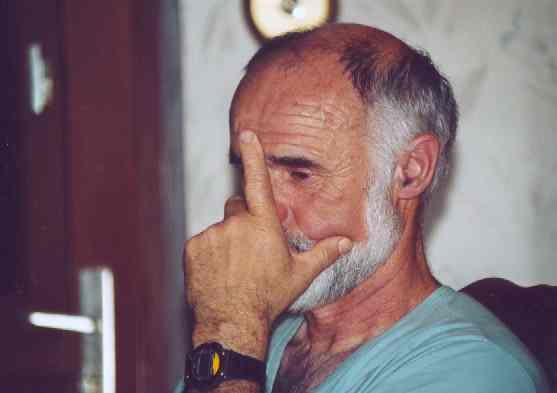
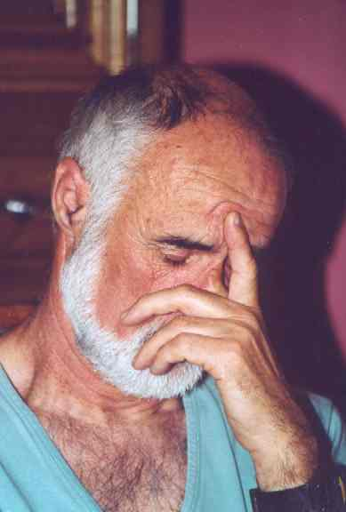

 
Non, décidément, la soirée est bien fatigante et Raymond
va beaucoup moins bien.
Vous voulez vraiment voir la suite ??

Milieu de soirée. Raymond n'a peut-être pas tant la pêche...
 
Non, décidément, la soirée est bien fatigante et Raymond
va beaucoup moins bien.
Vous voulez vraiment voir la suite ??